تصميم وتركيب نوافير منزلية في المملكة العربية السعودية
نوفر خدمة تركيب نوافير صناعية داخل المنازل وخارجها في الحدائق الخاصة بها، وفي الحدائق العامة وفي الشركات الكبيرة وغيرها، وذلك نظرًا لأهميتها في إعطاء الحديقة منظرًا طبيعيًا وشكلًا جذابًا، وأنها تعمل بمثابة قطعة ديكور ثمينة داخل المنازل والقصور والفلل وتُزيد من قيمتها، كما تقوم المؤسسةبتركيبها في مداخل المنازل، وتُقدم العديد من الأنواع المختلفة لها، ومن أهمها (نافورة الجدار، ونافورة الطاولة، والنافورة المضاءة، ونافورة الشلال، والنافورة المرتكزة على الأرض، وغيرها)، والتي يُمكن الاختيار من بينها وفقًا للذوق العام مع ما يتناسب مع حالة المكان المراد تركيبها به، ولها العديد من الأشكال المختلفة التي يمكن اختيارها بناءً على رغبة العميل مثل النوافير المجسمة على هيئة حيوانات أو طيور مثل الأسد، والنافورة والنوافير العادية، وغيرها، وتستخدم المؤسسة العديد من الخامات المختلفة في تصميمها ومن أهمها الأحجار والخشب والسيراميك والرخام والجرانيت والإسمنت وغيرها الكثير من المواد المختلفة.
 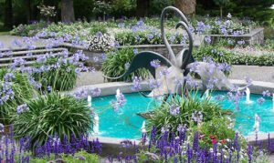
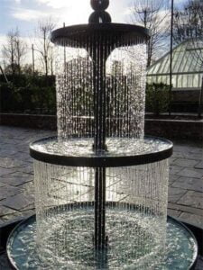
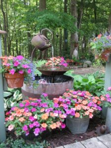
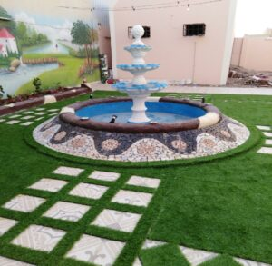
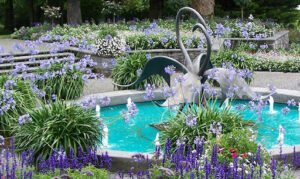
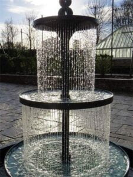
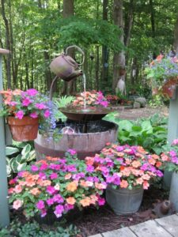
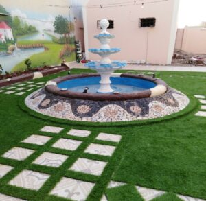
 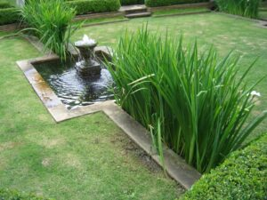
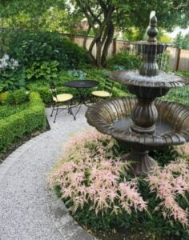
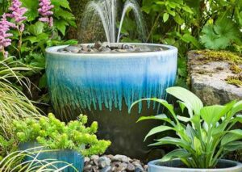
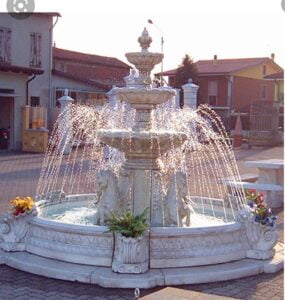
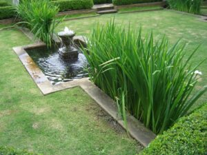
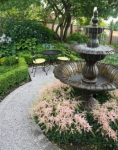
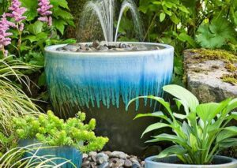
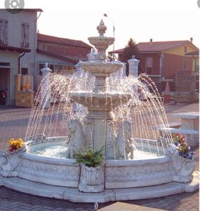